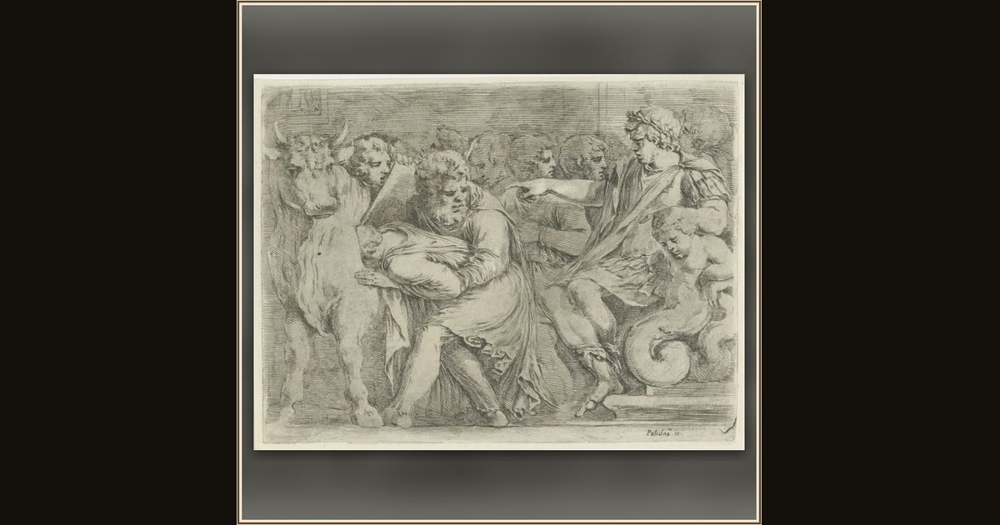

Perillus wordt in opdracht van Phalaris in een verhitte bronzen stier geworpen
Stefano della Bella, after Polidoro da Caravaggio · 1620–1664 · rijksmuseum
At the tyrant Phalaris's command Perillus is thrown into the heated bronze bull while a group looks on; Aristotle lists Phalaris among men who rose to tyranny (5.1310b) Explore its place in Aristotle's Politics, Book V, section 20.